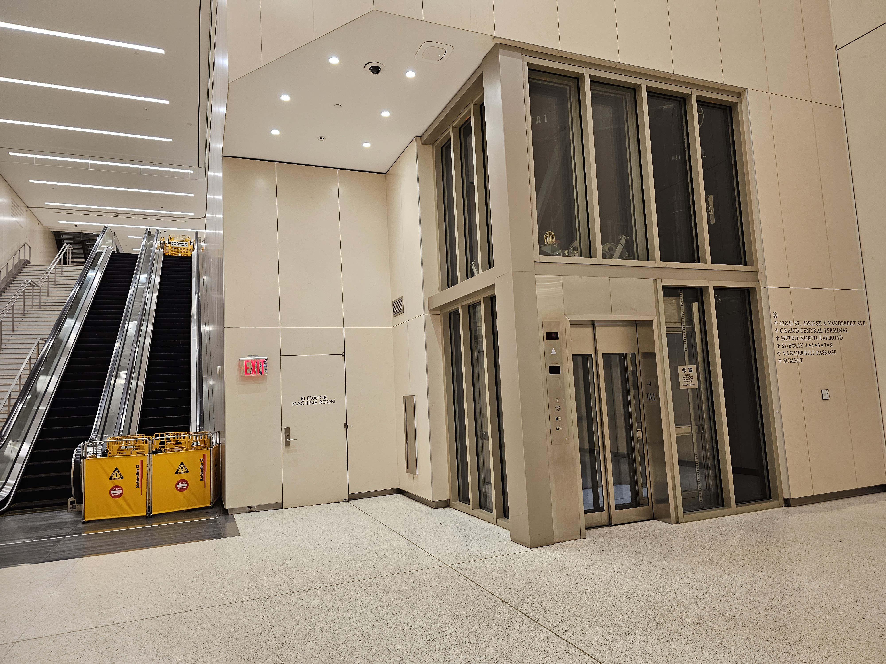

Main Way
Exit from the platform your LIRR train arrives on and head to the mezzanine. Then, take the 45th Street escalators to the concourse.
Once there, turn left and walk straight towards the 43rd Street area, towards the Dining Concourse and Subway.

Go through the clear glass doors towards One Vanderbilt and you will see an elevator.
You could take the stairs 2 floors up to the Main Concourse.

Or preferably, take the elevator to floor -1, which will lead you directly to the Main Concourse.

When you get here, walk through these doors and walk straight ahead, where you'll reach the main area!
Alternative Way
If you don't need an elevator, this way may be faster.
Instead of going towards the glass doors at the 43rd Street Area, you will instead turn left to the Blue Doors.

Take the stairs or escalators up to the Dining Concourse. Then turn 180 degrees and take the stairs. These say To Main Concourse
You have arrived!
BONUS: If you want to grab a bite, head up to the Dining Concourse, where there are various shops you can eat at!
Some Tips and Tricks
At Grand Central, there is a set of elevatorsthat will take you up from the mezzanine to the concourse.
It's located between the 46th Street and 47th Street escalator banks on the mezzanine, so look for signs.
Expected Time Taken - Minutes
To get to the Main Concourse from the LIRR tracks, it will take you roughly 5-7 minutes depending on your speed and method you chose.
Grand Central Terminal!